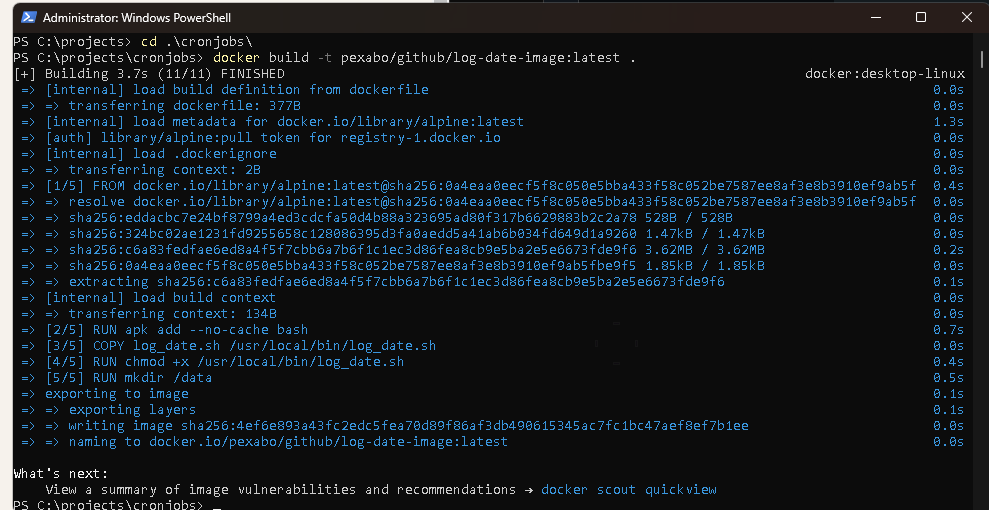
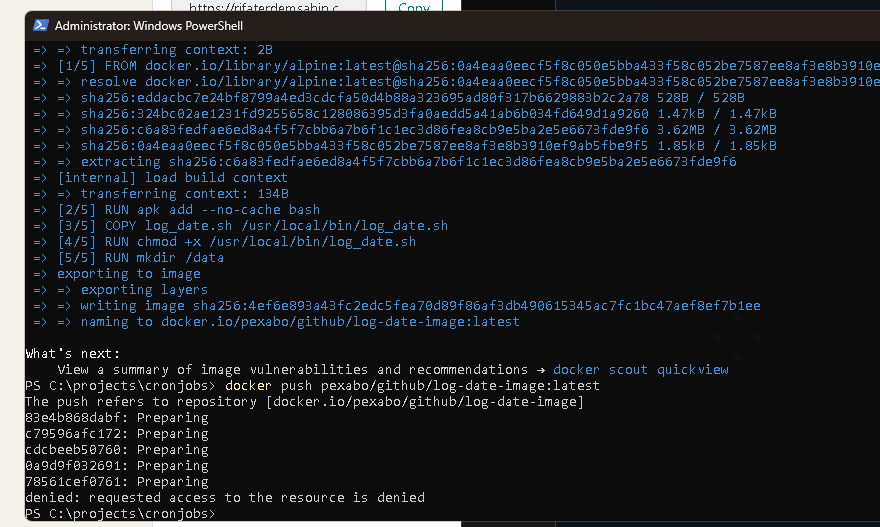
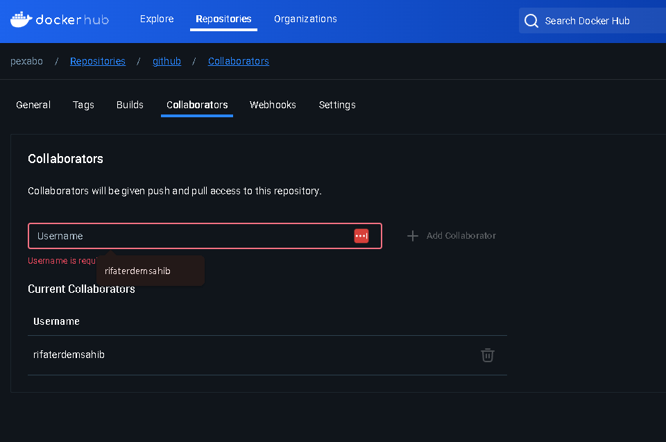
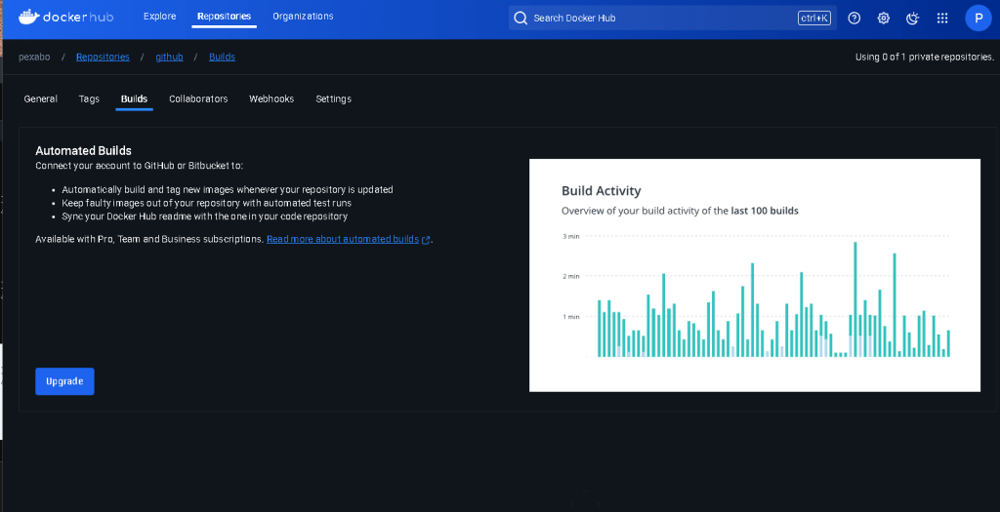
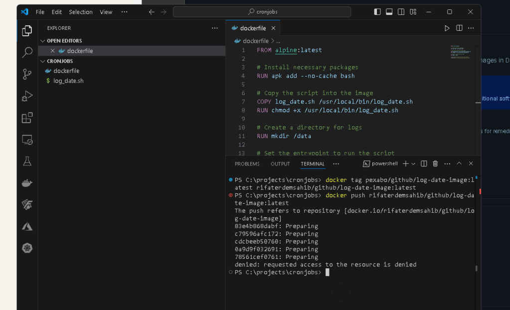
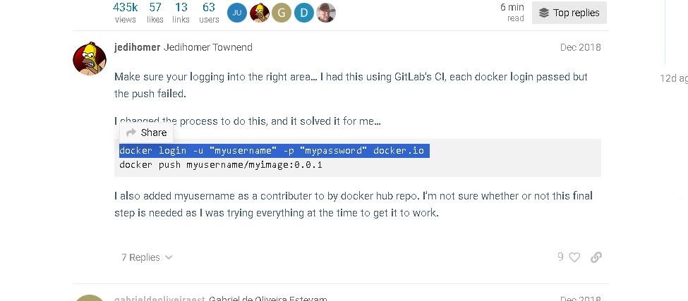
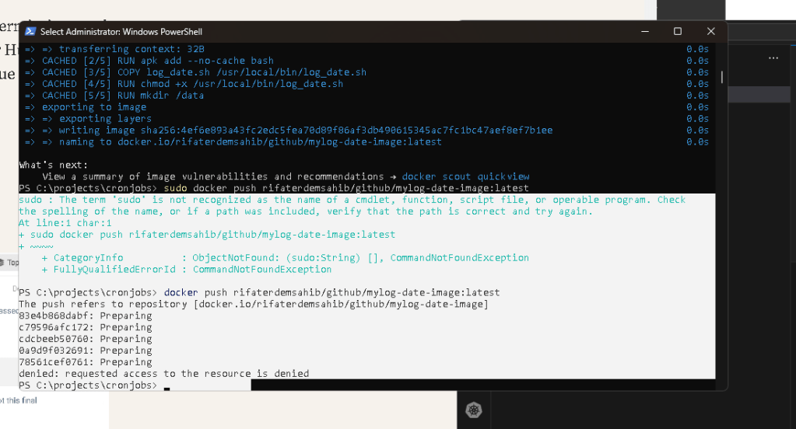

Creating a Proof of Concept (PoC) for Cron Jobs in an OpenShift Cluster
When working with OpenShift, you can harness Kubernetes CronJobs to handle scheduled tasks in a containerized environment. This blog post will guide you through setting up and testing a CronJob in an OpenShift cluster. We’ll go through each step from setting up your OpenShift cluster to verifying and documenting your setup.
1. Set Up Your OpenShift Cluster
First, ensure you have access to an OpenShift cluster. Options include:
-
Local OpenShift installation: Using Minikube or CodeReady Containers.
-
Managed OpenShift services: Such as Red Hat OpenShift on AWS, Azure, or GCP.
2. Create a Sample Docker Image
Create a Docker image that contains the script or application you want to run periodically.
1. Create a Simple Script
Here’s an example script that logs the current date and time:
!/bin/bash
Filename: log_date.sh
echo "Current date and time: $(date)" >> /data/logfile.log
2. Create a Dockerfile
Define a Dockerfile to build an image with the script:
FROM alpine:latest
Install necessary packages
RUN apk add --no-cache bash
Copy the script into the image
COPY log_date.sh /usr/local/bin/log_date.sh
RUN chmod +x /usr/local/bin/log_date.sh
Create a directory for logs
RUN mkdir /data
Set the entrypoint to run the script
ENTRYPOINT ["/usr/local/bin/log_date.sh"]

The error message you're encountering indicates that the tag you're trying to use for your Docker image is not formatted correctly. Docker image tags must follow a specific format, and the error you're seeing is due to having multiple colons (:) in your tag.
Correct Docker Tag Format
A Docker image tag generally follows this format:
repository:tag
-
repository: The name of the repository (e.g.,
pexabo/github). -
tag: The version or identifier for the image (e.g.,
latest).
Issue with Your Command
Your command:
docker build -t pexabo/github:latest/log-date-image:latest .
In this command:
pexabo/github:latest/log-date-image:latestis being treated as the entire image name and tag, which is not valid due to the extra colon (:).
How to Fix
You need to use only one colon (:) for the tag. If you want to specify a path like structure, use a slash (/) instead.
Option 1: Nested Path as Repository Name
If you're trying to create a nested repository path, you should use slashes (/) like this:
docker build -t pexabo/github/log-date-image:latest .
Here, pexabo/github/log-date-image is the full repository name, and latest is the tag.
Option 2: Separate Tags
If you want latest and log-date-image to be separate tags (though this is unconventional), you'll need to handle tagging differently. However, typically, Docker only allows one tag per docker build command.
Corrected Command Example
Based on what seems like your intent:
docker build -t pexabo/github/log-date-image:latest .
This corrected command will build an image with the repository name pexabo/github/log-date-image and the tag latest.
Try this corrected command, and it should work without errors!
3. Build and Push the Docker Image
Build and push the Docker image to a container registry accessible from your OpenShift cluster:
docker build -t
docker push


Cloud build are there

The error message you're seeing, denied: requested access to the resource is denied, typically indicates that you do not have permission to push to the specified Docker repository. This could be due to several reasons:
Possible Causes and Solutions
-
Not Logged In to Docker Hub or Incorrect Account:
-
Ensure you are logged into Docker Hub with the correct account that has permissions to push to the
pexabo/githubrepository. Solution:
Run the following command to log in to Docker Hub:
docker login
After executing the command, enter your Docker Hub username and password. If your login is successful, try pushing the image again.
-
Repository Does Not Exist or Is Not Owned by You:
-
The repository
pexabo/github/log-date-imagemust exist on Docker Hub, and you must have permission to push images to it. If the repository does not exist or is not public, and you do not have access, you will receive this error. Solution: -
If you own the Docker Hub account
pexabo:
Log into Docker Hub and create the repository github/log-date-image under your account if it doesn't already exist.
-
If you do not own the account
pexabo, you need to have write access to push to that repository, or you need to use a repository name you have access to. -
Incorrect Repository Naming:
-
Make sure the repository name
pexabo/github/log-date-imageis correct and intended. Solution: -
Double-check the repository name on Docker Hub and ensure it matches the one you're trying to push.
-
Access Token or Credentials Issue:
-
If you are using an access token instead of a password, ensure that the token has the correct permissions for pushing images. Solution:
-
Generate a new access token with the appropriate permissions if needed and log in again using the token:
docker login -u
Then paste your access token after executing the command.
Summary of Steps to Resolve the Issue:
- Login to Docker Hub:
docker login
-
Ensure Correct Repository and Permissions:
-
Verify that
pexabo/github/log-date-imageis the correct repository name. -
Ensure you have the necessary permissions to push to it.
-
Create the Repository on Docker Hub (if necessary):
-
Go to Docker Hub, create the repository under your account if you haven't done so, and then push the image again.
After ensuring you are logged in and have the correct permissions, try pushing the image again:
docker push pexabo/github/log-date-image:latest
If you follow these steps, you should be able to push your Docker image successfully.
Login issue
Based on the output of your docker images command, it looks like you have correctly tagged your Docker image with multiple repository names:
-
pexabo/github/log-date-image:latest -
rifaterdemsahib/github/log-date-image:latest -
rifaterdemsahib/github/mylog-date-image:latest
Since the push to Docker Hub is still being denied, here are some additional steps and checks to ensure everything is set up correctly:
Steps to Troubleshoot and Resolve the Push Issue
-
Confirm the Correct Repository Name:
-
Make sure you are pushing to a repository that you have created under your Docker Hub account (
rifaterdemsahib). -
The repository name in Docker Hub should exactly match the name you're using in your Docker push command. In this case, ensure the repository
github/log-date-imageorgithub/mylog-date-imageexists under your Docker Hub accountrifaterdemsahib. -
Check Repository Existence on Docker Hub:
-
Log in to Docker Hub with your
rifaterdemsahibaccount. -
Go to the "Repositories" section of your profile.
-
Verify that either
github/log-date-imageorgithub/mylog-date-imagerepository exists. If it doesn’t, create the repository manually: -
Click on "Create Repository."
-
Enter the repository name (e.g.,
github/log-date-image). -
Set it to "Public" or "Private" based on your requirements.
-
Login to Docker Hub Again:
-
Although you’ve logged in before, it’s worth logging out and back in to refresh your credentials:
docker logout
docker login -u rifaterdemsahib
After running docker login, enter your password or Docker Hub personal access token when prompted.
-
Check Docker Hub Account Permissions:
-
Make sure your account does not have any restrictions. This could be due to a locked account, security restrictions, or other limitations. Confirm with Docker Hub support if needed.
-
Ensure Correct Tagging and Re-Push:
-
You have already tagged your images correctly, but to confirm, try re-tagging one of your images and pushing again:
docker tag pexabo/github/log-date-image:latest rifaterdemsahib/github/log-date-image:latest
docker push rifaterdemsahib/github/log-date-image:latest
If you're using the mylog-date-image tag, do the same:
docker tag pexabo/github/log-date-image:latest rifaterdemsahib/github/mylog-date-image:latest
docker push rifaterdemsahib/github/mylog-date-image:latest
-
Use a Personal Access Token:
-
If you haven’t already, try using a Docker Hub personal access token instead of your password. This is a more secure method and sometimes required if Docker Hub has disabled password login for your account. Create a Personal Access Token:
-
Go to Docker Hub and navigate to your account settings.
-
Generate a new access token.
-
Use this token for login:
docker login -u rifaterdemsahib --password-stdin
Then paste the token when prompted.

If the Issue Persists
If you have verified the repository exists, correctly logged in, and used the appropriate credentials but still cannot push:
-
Docker Hub Limits or Issues: There could be temporary restrictions or limits on your account. Check the Docker Hub Status or contact Docker Hub support for assistance.
-
Account-Specific Issues: If your Docker Hub account has specific limitations, bans, or security settings applied, this could cause the push denial.
By following these steps, you should be able to identify and resolve the issue preventing you from pushing your Docker image.
The error message denied: requested access to the resource is denied typically indicates that there is an issue with your permissions or authentication for pushing the Docker image to Docker Hub. Here are a few steps to help troubleshoot and resolve the issue:
1. Verify Docker Hub Repository Permissions
Ensure that the repository rifaterdemsahib/github exists on Docker Hub and that your account (rifaterdemsahib) has the correct permissions to push to this repository. If the repository does not exist, you need to create it:
-
Go to Docker Hub (https://hub.docker.com).
-
Log in with your account (
rifaterdemsahib). -
Create a new repository named
github.
2. Confirm Correct Login
Ensure that you are logged in to Docker Hub with the correct credentials:
docker logout
docker login -u rifaterdemsahib
Make sure to enter the correct password for your Docker Hub account.
3. Check Image Tagging
Ensure that the image is tagged correctly. Your current command tags the image with the repository name rifaterdemsahib/github/log-date-image:latest. The image must be tagged correctly to be pushed to your Docker Hub repository:
docker tag pexabo/github/log-date-image:latest rifaterdemsahib/github/log-date-image:latest
Check the tag by running:
docker images
Make sure the rifaterdemsahib/github/log-date-image:latest tag exists.
4. Retry Pushing the Image
After confirming the repository, login, and tagging, try pushing the image again:
docker push rifaterdemsahib/github/log-date-image:latest
5. Check for Two-Factor Authentication
If you have enabled two-factor authentication (2FA) on your Docker Hub account, you must use a personal access token instead of your password. To generate a token:
-
Log in to Docker Hub.
-
Go to your account settings and find the "Security" section.
-
Generate a new access token.
Use this token as your password when logging in:
docker login -u rifaterdemsahib --password-stdin
6. Repository Name Change
If the repository name or path has changed, you may need to correct the path in your tag command:
docker tag pexabo/github/log-date-image:latest rifaterdemsahib/github/log-date-image:latest
Ensure the image's tag matches the intended repository structure on Docker Hub.
7. Verify Docker Hub Server Status
Occasionally, Docker Hub might experience outages or have issues with permissions and access. You can check Docker Hub's status at Docker Hub Status to ensure no widespread problems.
Summary
By verifying the repository's existence, ensuring correct permissions and logins, properly tagging your image, and checking Docker Hub's server status, you should be able to resolve the access denied issue and push your Docker image successfully.
Docker hub push error >


Delete and repush also did not work
3. Create a Kubernetes CronJob Resource
(including crontabs everything runs in docker )
Define a Kubernetes CronJob that uses your Docker image to execute the script at scheduled intervals.
1. Create a CronJob YAML File
Create a file named log-date-cronjob.yaml with the following content:
apiVersion: batch/v1
kind: CronJob
metadata:
name: log-date-cronjob
spec:
schedule: "/1 * * * " # Runs every minute
jobTemplate:
spec:
template:
spec:
containers:
- name: log-date
image:
volumeMounts:
- name: log-volume
mountPath: /data
restartPolicy: OnFailure
volumes:
- name: log-volume
emptyDir: {}
Adjust the schedule field according to your needs. The example above schedules the job to run every minute.
2. Apply the CronJob Configuration
Use the OpenShift CLI (oc) to apply the CronJob configuration:
oc apply -f log-date-cronjob.yaml
4. Verify and Monitor
1. Check CronJob Status
Ensure the CronJob is created and running as expected:
oc get cronjobs
2. Monitor Job Execution
To verify that the CronJob is executing correctly, check the logs of the executed jobs:
oc get jobs
oc logs
Alternatively, check the logs directly from the CronJob:
oc logs -l job-name=
3. Review Logs
If you have configured logging within your container (e.g., writing to /data/logfile.log), review these logs to ensure your CronJob is working correctly. Access the logs through a persistent volume or other storage mechanism depending on your volume mount configuration.
5. Documentation and Refinement
1. Document Your PoC
Create comprehensive documentation that includes:
-
The purpose of the CronJob.
-
Details of the Docker image.
-
Configuration of the CronJob.
-
Monitoring and verification steps.
2. Refine Based on Feedback
Gather feedback from stakeholders and adjust your CronJob setup based on their input.
By following these steps, you’ll have a functional proof of concept for using CronJobs within an OpenShift cluster. This demonstrates how to automate tasks effectively using Kubernetes CronJobs in a containerized environment.
Imported from rifaterdemsahin.com · 2024